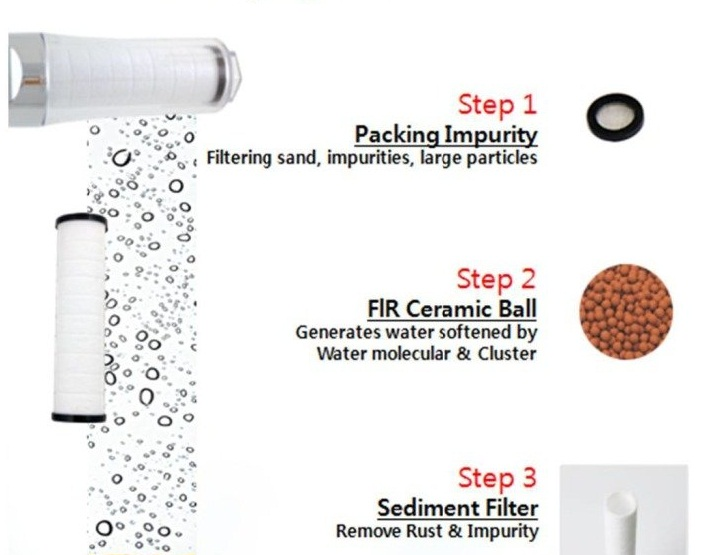

Step one will be the passage of
a given amount of water through
the first filter, as well as the
purification of the water itself
passing through the filter. In
one step, it is expected to last
no more than an hour. After
all this is done the water
will move to filter 2 and then
the second step will begin.